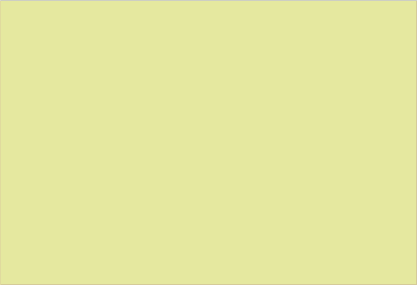
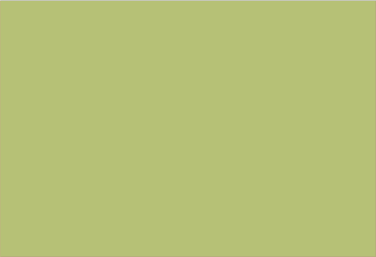
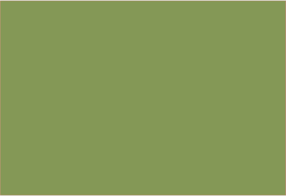
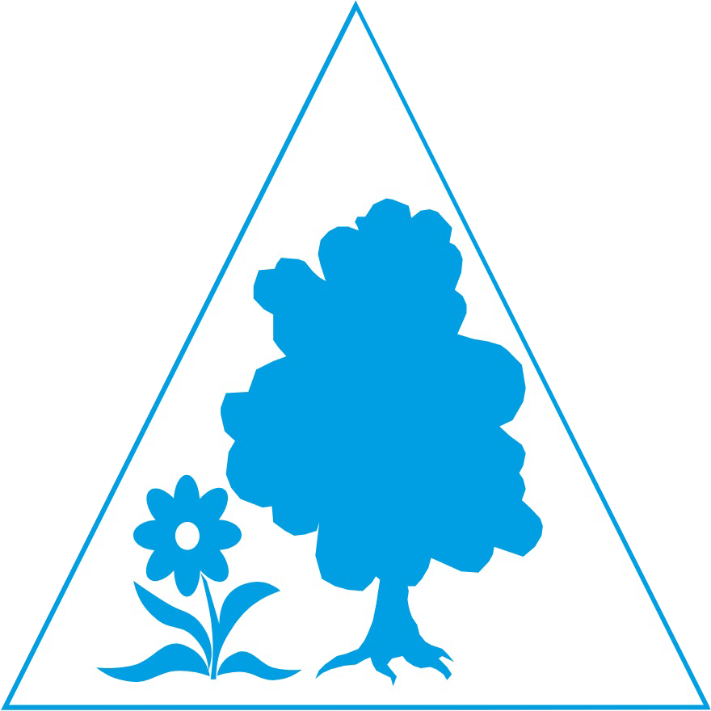
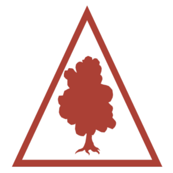
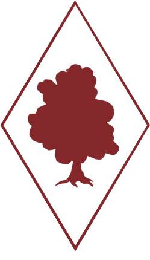
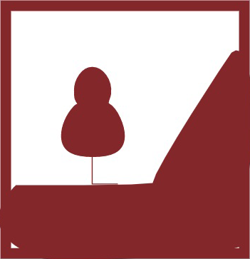
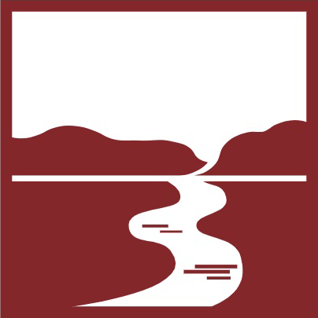
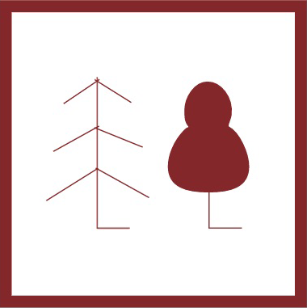

Природно-заповідний фонд загальнодержавного значення
Площа об’єктів природно-заповідного фонду
(% від загальної площі регіону, 2020 р.)
| до 5,0 | |
|  | 5,0-10,0 |
|  | 10,1-15,0 |
|  | понад 15,0 |
Об’єкти природно-заповідного фонду загальнодержавного значення
| природні заповідники | |
| біосферні заповідники | |
| національні природні парки | |
| заказники (площинні об’єкти) | |
|  | ботанічні сади |
| зоологічні парки | |
|  | дендрологічні парки |
|  | парки-пам’ятки садово-паркового мистецтва |
Заказники (точкові об’єкти)
|  | ландшафтні |
|  | гідрологічні |
| ботанічні | |
|  | лісові |
Пам’ятки природи
| комплексні | |
| геологічні | |
| ботанічні | |
| загальнозоологічні |